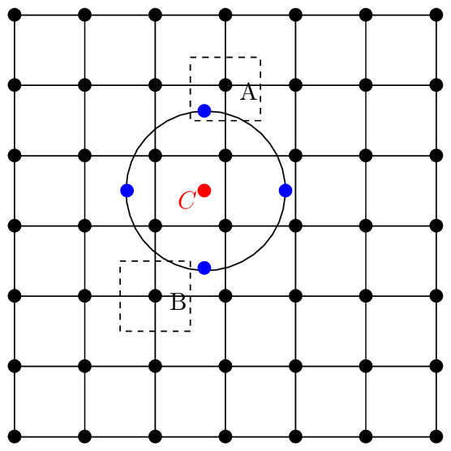

Suppose that the 6D guiding-center phase-space (X,v) is described by (ψ,𝜃,ϕ,v∥,v⊥,α) coordinates. The Jacobian of the coordinate system is given by 𝒥 = 𝒥rv⊥, where 𝒥r = 𝒥 (ψ,𝜃) is the Jacobian of the coordinates (ψ,𝜃,ϕ). Suppose that we sample the 6D phase-space by using the following probability density function:
|
| (263) |
where V r is the volume of the spatial simulation box, T is a constant temperature. P given above is independent of ψ,𝜃,ϕ and α. It is ready to verify that the above P satisfies the following normalization condition:
|
| (264) |
I use the rejection method to numerically generate Np markers that satisfy the above probability density function. [The effective probability density function actually used in the rejection method is P′, which is related to P by
|
| (265) |
Note that P′ does not depend on the gyro-angle α.]
Then the weight of a marker is written
|
| (266) |
Since both fg and P is independent of the gyro-angle α, w is also independent of α.
The numerical representation of δfg is written
|
| (267) |
Although the distribution function δfg to be sampled in gyrokinetic simulations is independent of the gyro-angle α, we still need to sample the gyro-angle because we need to use the inverse guiding-center transformation, which needs the gyro-angle. Each marker needs to have a specific gyro-angle value αj so that we know how to transform its Xj to xj and then do the charge deposition in x space. To increase the resolution over the gyro-angle, we need to load more markers. However, thanks to the fact that both sampling probability density function P and δfg are independent of α, the resolution over the gyro-angle can be increased in a simple way. Specifically, for a marker with (Xj,v∥j,v⊥j), its gyro-angle value αj can be adjusted arbitrarily without changing the value of its weight wj because the weight is independent of αj. In other words, we have the freedom of choosing the value of αj (the independence of the weight on αj guarantees that the weight of the marker is still equal to the original value that this marker takes). Suppose that we choose 4 different values of αj for the j th marker, denoted by αj1, αj2, αj3, and αj4. Then for each of the four gyro-angle values, we do the inverse guiding-center transformation and then do the charge deposition using their original weight wj for each marker and then loop over all the markers. Denote a grid quantity (e.g. density) build by the deposition process by n1(x), n2(x), n3(x), and n4(x), corresponding to using the four gyro-angle values. Then the more accurate estimation of the grid quantity is given by
|
| (268) |
This corresponds to sampling the 6D phase-space 4 separate times (each time with identical sampling points in (X,v∥,v⊥) but different sampling points in α) and then using the averaging of the 4 Monte-Carlo integrals to estimate the exact value. This estimation can also be (roughly) considered as a Monte-Carlo estimation using 4 times larger number of markers as that is originally used (the Monte-Carlo estimation using truly 4 time larger number of markers is more accurate than the result we obtained above because the former also increase the resolution of (X,v∥,v⊥) while the latter keeps the resolution of (X,v∥,v⊥) unchanged.)
In numerical code, we choose N sampling points that are evenly distributed on the gyro-ring (N is usually 4 as a compromise between efficiency and accuracy). Denote the Mote-Carlo weight of the j th marker by wj. Then the weight is evenly split by the N sub-markers on the gyro-ring. Therefore each sub-marker have a Monte-Carlo weight wj∕N. Then calculating the integration (260) at a grid corresponds to depositing all the N sub-markers associated with each guiding-center marker to the grid, as is illustrated in Fig. 3. However, interpreting in this way is confusing to me because, with a single sampling of the phase-space, the phase-space volume or weight can not be easily split. I prefer the above interpretation that the 6D phase space is sampled 4 separate times and thus we get 4 estimations and finally we take the averaging of these 4 estimations. It took me several days to finally find this way of understanding.

In summary, the phase-space to be sampled in gyrokinetic simulations are still 6D rather than 5D. In this sense, the statement that gyrokinetic simulation works in a 5D phase space is misleading. We are still working in the 6D phase-space. The only subtle thing is that the sixth dimension, i.e., gyro-angle, can be sampled in an easy way that is independent of the other 5 variables.
In numerical implementation, the gyro-angle may not be explicitly used. We just try to find 4 arbitrary points on the gyro-ring that are easy to calculate. Some codes (e.g. ORB5) introduces a random variable to rotate these 4 points for different markers so that the gyro-angle can be sampled less biased.
For a marker with coordinators (X,v⊥,v∥), we can calculate particle positions by using the transformation (21). There are infinite number of particle positions associated with the marker since the direction of v⊥ (i.e., gyro-angle) is not specified. All these possible particle positions are on a circle around the guiding-center position X. This circle is often called the gyro-ring.
From the view of particle simulations, the gyrokinetic model can be considered as a noise reduction method, where the averaging over the gyro-angle is equivalent to a time averaging over a gyro-period, which reduces the fluctuation level (in both time and space) assosicated with evaluating the Monte-Carlo phase integration. Here the averaging in gyrokinetic particle simulation refers to taking several points on a gyro-ring when depositing markers to spatial grids to obtain the density and current on the grids. (Another gyro-averaging appears in evaluating the guiding-center drift.) In gyrokinetic particle simulation, even a step size smaller than a gyro-period is taken, the quantities used in the model is still the ones averaged over one gyro-period. In this sense, a gyrokinetic simulation is only meaningful when the time step size is larger than one gyro-period. [**Some authors may disagree with that the gyro-averaging is a time-averaging. They may consider the gyro-averaging as the phase-space integration over the gyro-angle coordinate. This view seems to be right in Euler simulations but seems to be wrong in particle simulations. The reason is as follows. For each marker, choose a random gyro-phase and then do the inverse transformation to obtain particle position, and sum over all markers (this corresponds to phase-space Monte-Carlo integration, which include the gyro-angle integration, so no further gyro-angle integration is needed); choose another random gyro-phase and repeat the above procedure (this can be interpreted as do the phase-space Monte-Carlo integration at another time), choose further random gyro-phase for each marker and repeat. Finally averaging all the above values to obtain the final estimation of the phase-space integration. This amounts to a time-averaging over a gyro-motion. In summary, sampling several times with different gyro-phases for each marker and taking the average amounts to the time averaging over gyro-motion**]
When doing the time-average over the ion cylotron motion, the time variation of the low-frequency mode is negilible and only the spatial variation of the modes is important. For the gyro-motion, only the gyro-angle is changing and all the other variables, (X,v⊥,v∥), are approximately constant. As a result, this time averaging finally reduces to a gyro-averaging.
I am always reasoning in terms of particle position and velocity, considering the guiding-center location as an image of the particle position in an imaginary space (guiding-center space). When working in the guiding-center space, I am always reasoning by transforming back to the particle position. This reasoning is clear and help me avoid some confusions I used to have.